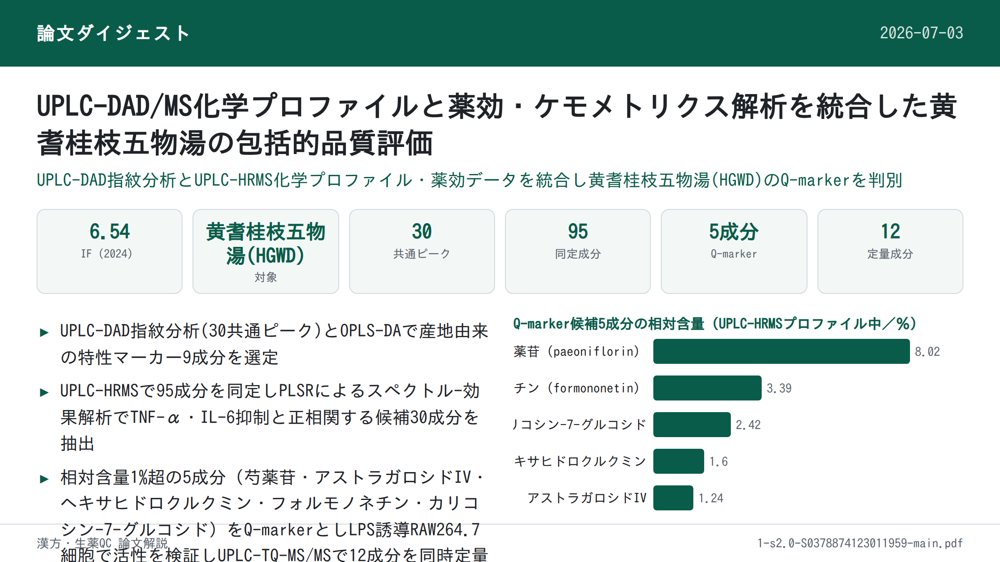
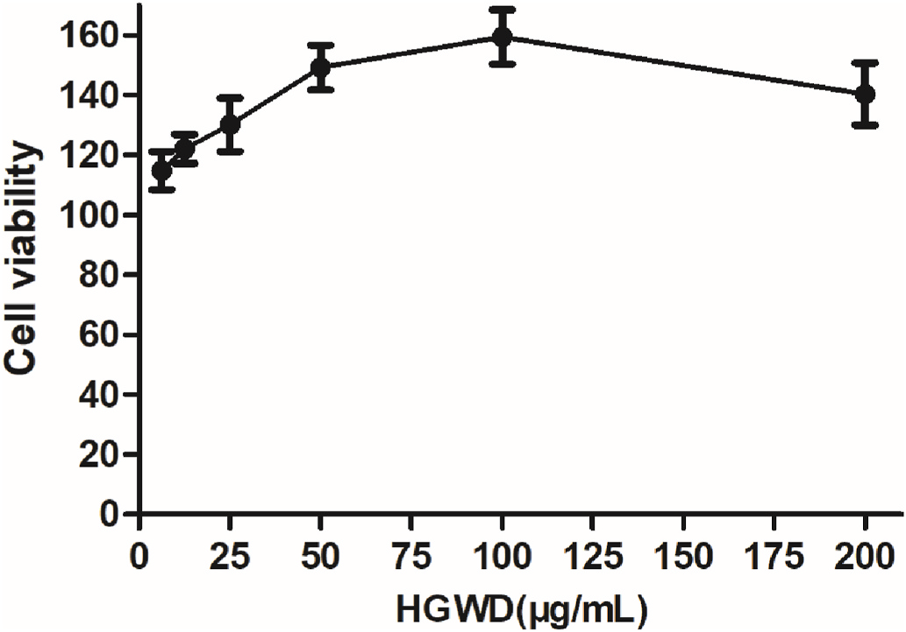
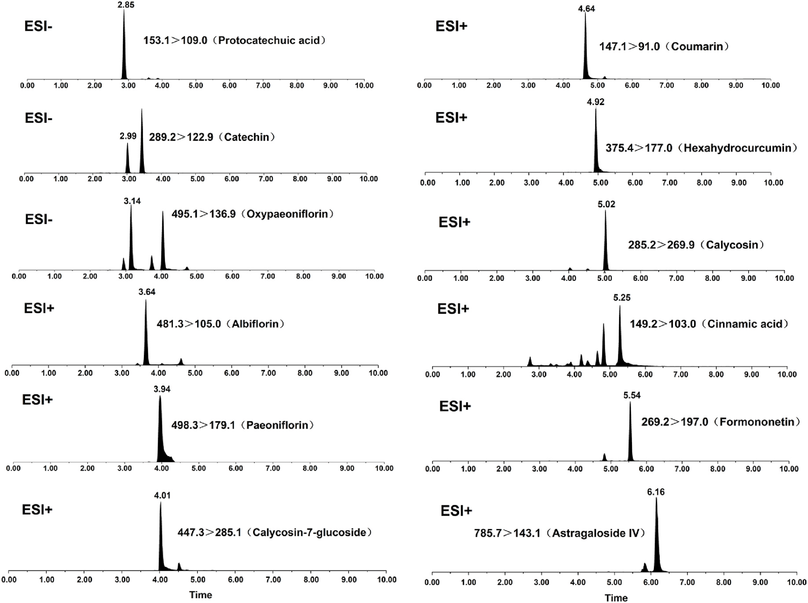
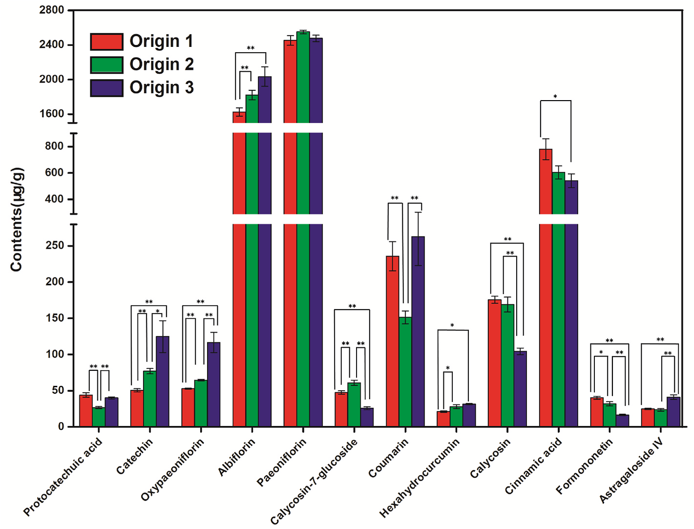

UPLC-DAD/MS化学プロファイルと薬効・ケモメトリクス解析を統合した黄耆桂枝五物湯の包括的品質評価

<!-- 方針: ほぼ全訳＋必要に応じた補足。原文構成に沿って訳出。「> 補足:」は訳者注。 -->
書誌情報
- 標題（原題）: A comprehensive quality evaluation for Huangqi Guizhi Wuwu decoction by integrating UPLC-DAD/MS chemical profile and pharmacodynamics combined with chemometric analysis
- 著者・所属: Maoyuan Jiang, Lele Yang, Liang Zou, Lei Zhang, Shengpeng Wang, Zhangfeng Zhong, Yitao Wang, Peng Li（責任著者）／マカオ大学中医薬研究院・中薬品質研究国家重点実験室（中国マカオ）、成都大学食品生物工学学院（中国成都）、四川省中医薬科学院実験動物センター（中国成都）
- 掲載誌・巻号・DOI: Journal of Ethnopharmacology 319 (2024) 117325. https://doi.org/10.1016/j.jep.2023.117325
- インパクトファクター: 6.54（Journal of Ethnopharmacology, JCR 2024 / Clarivate。web検索による複数の二次情報源の集計に基づく値であり、Clarivate公式レポートを直接参照したものではない点に留意）
- 受理経過 / ライセンス: 受領 2023-07-13 / 改訂稿受領 2023-09-30 / 採録 2023-10-15 / オンライン公開 2023-10-16。© 2023 Elsevier B.V. All rights reserved.
補足: HGWD = 黄耆桂枝五物湯（Huangqi Guizhi Wuwu Decoction）。『金匱要略』に記載された古典的な漢方処方で、黄耆(Astragali Radix, AR)・白芍(Paeoniae Radix Alba, PRA)・桂枝(Cinnamomi Ramulus, CR)・生姜(Zingiberis Rhizoma Recens, ZRR)・大棗(Jujubae Fructus, JF)の5味からなる。TNF-α = 腫瘍壊死因子α、IL-6 = インターロイキン6、RA = 関節リウマチ（rheumatoid arthritis）、Q-marker = 品質マーカー（quality marker）。
要旨（Abstract）
民族薬理学的関連性: 黄耆桂枝五物湯（HGWD）は『金匱要略』に原典を持つ古典的な漢方処方であり、人の「血痺」（「痺」証の一種）の治療に用いられてきた。臨床では、HGWDは関節リウマチ（RA）の治療に応用されている。
研究目的: 薬効と化学的特徴の両方を反映する化学マーカーの特性解析は、漢方（TCM）の品質管理にとって大きな意義を持つ。本研究では、HGWDの抗RA作用を例として、化学マーカーを同定するために全体的な化学プロファイルと生物活性データを組み合わせた包括的戦略を開発することを目的とした。
材料と方法: 第一に、超高速液体クロマトグラフィー-ダイオードアレイ検出器（UPLC-DAD）による指紋分析を確立・バリデーションし、異なる産地のHGWDの全体的な品質を評価した。UPLC-DAD指紋分析とケモメトリクス手法を組み合わせ、異なる産地のHGWDに関連する特性マーカーをスクリーニングした。第二に、15バッチのHGWD試料の化学プロファイルを、UPLCとハイブリッド線形イオントラップ-Orbitrap質量分析（UPLC-HRMS）の連結により特徴づけた。続いて、15のHGWD試料のin vitro抗RA活性を評価した。第三に、スペクトル-効果関係解析を行い、品質マーカーとなりうる生物活性化合物を同定した。最後に、UPLC-トリプル四重極タンデム質量分析法を最適化・確立し、15バッチのHGWDにおける特性マーカーおよび品質マーカーの定量分析に用いた。
結果: UPLC-DAD指紋分析では合計30の共通ピークが同定された。9つのピークが特性マーカーとして識別・認定された：プロトカテク酸、クマリン、桂皮酸、オキシパエオニフロリン、パエオニフロリン（芍薬苷）、カリコシン、フォルモノネチン、カテキン、アルビフロリン。さらに、UPLC-HRMS化学プロファイルにおいて95の共通化合物が同定された。薬理学的解析の結果、15のHGWD試料の抗RA活性には大きなばらつきがあることが示された。スペクトル-効果関係解析により、抗RA活性と正の相関を示す30の潜在的生物活性成分が明らかになった。そのうち相対量1%超の5化合物、すなわちパエオニフロリン、アストラガロシドIV、ヘキサヒドロクルクミン、フォルモノネチン、カリコシン-7-グルコシドが品質マーカーとして選定され、LPS誘導RAW264.7マクロファージにおいてその活性が検証された。最後に、上記の代表成分12種を15バッチのHGWD試料において同時定量した。
結論: 全体的な化学プロファイルと代表成分評価を組み合わせることで、本系統的戦略はHGWDの品質評価を改善するための信頼性が高く有効な手法となりうる。
補足: 略語（原文Abbreviations節より）: TCMs = 漢方（Traditional Chinese medicines）、RA = 関節リウマチ、UPLC-DAD = 超高速液体クロマトグラフィー-ダイオードアレイ検出器連結、GC-MS = ガスクロマトグラフィー質量分析、PLSR = 部分最小二乗回帰、ANN = 人工ニューラルネットワーク、HGWD = 黄耆桂枝五物湯、AR = 黄耆(Astragali Radix)、PRA = 白芍(Paeoniae Radix Alba)、CR = 桂枝(Cinnamomi Ramulus)、ZRR = 生姜(Zingiberis Rhizoma Recens)、JF = 大棗(Jujubae Fructus)、TQ-MS/MS = トリプル四重極タンデム質量分析、RSD = 相対標準偏差、MRM = 多重反応モニタリング、VIP = 投影に対する変数重要度（variable importance in projection）。
1. 序論（Introduction）
複数成分・複数標的という特徴を持つ漢方（TCMs）、とりわけTCM処方は、中国および東洋諸国で広く用いられてきた（Zhang et al., 2020）。TCMの化学成分は、多様な産地、複数種の混在、異なる前処理法によって影響を受けることが多い（Jiang et al., 2022）。そのため、全体的な化学プロファイルを反映し、かつ代表成分を評価する包括的・系統的な品質管理戦略は、臨床における安全性と有効性を保証するために不可欠である。超高速液体クロマトグラフィー-ダイオードアレイ検出器（UPLC-DAD）指紋分析は広く検討されており（Sang et al., 2021）、TCMの全体的な品質評価に適切に応用されている。加えて、薬効に関連する代表成分の精密な定量も、統合的な品質管理において有用である。しかし、多くの場合、TCMの有効性・安全性を推定するために定量分析されるのは1種類または数種類の化学化合物のみである（National Medical Products Administration, 2020）。これらの化合物は明らかにTCMの真正かつ内在的な特性を反映できない。したがって、TCMの治療効果に最も寄与する品質マーカー（Q-marker）は、治療効果の物質的基盤を理解し、薬理活性に基づく品質管理を発展させる上で重要な役割を果たす。
これまで、高い分解能と十分な感度を持つ様々な多成分分析技術がTCMの化学プロファイルの特徴づけに用いられてきた。例えばUPLC-DAD（Lan et al., 2021）、液体クロマトグラフィー-質量分析（UPLC-MS）(Ji et al., 2021; Zhang et al., 2023)、ガスクロマトグラフィー-質量分析（GC-MS）(Fu et al., 2021)、定量核磁気共鳴（QNMR）(Wang et al., 2022) などである。しかし、高スループット分析技術によって得られる膨大な化学情報の中から、Q-markerとして機能する特定の化学化合物をスクリーニング・認識することはできない。このギャップを埋めるため、灰色関連解析（GRA）(Liu et al., 2022)、部分最小二乗回帰（PLSR）解析（Yu et al., 2022）、人工ニューラルネットワーク（ANNs）(Yang et al., 2021) などのケモメトリクス手法によって薬効と化学プロファイルとの相関（スペクトル-効果関係）を解析する手法が提案されている。特にPLSRは、試料数が変数数よりもはるかに少ない場合にスペクトル-効果関係を決定するために頻繁に用いられる。したがって、多くの化学プロファイルデータを含むTCMについてスペクトル-効果関係をPLSRによって確立することはより適切である（Gong et al., 2021）。
黄耆桂枝五物湯（HGWD）は古典的な漢方処方であり、『金匱要略』に「養血温経」の効能を持つものとして原典が記されている（Liu et al., 2020）。HGWDは伝統的に、身体のしびれと四肢の痛みを特徴的な症状とする「血痺」（「痺」証の一種）の治療に用いられてきた（Guan et al., 2019; Tian et al., 2020）。HGWDは白芍（PRA）、桂枝（CR）、黄耆（AR）、生姜（ZRR）、大棗（JF）の5種の生薬から構成される。現代の薬理学研究により、HGWDは鎮痛作用を持ち、神経伝達物質を調節し、抗関節リウマチ（RA）作用を有することが示されている（Zheng et al., 2020）。加えて、多くの臨床試験でHGWDがRA治療において信頼できる治療効果を有することが示されている（Cai and Hu, 1997; Liu, Z. et al., 2019; Shi et al., 2010; Wang and Zhang, 2004; Yang et al., 2019）。特に、関節痛など（Zhang and Lee, 2018）RAが引き起こす臨床症状は「血痺」の症状と類似している。これまでの科学的研究（Li et al., 2016; Lin et al., 2022; Liu et al., 2017; Liu, J. et al., 2019）では、HGWDの抗RA作用が示されてきた。例えば、HGWD投与により足関節滑膜の炎症が軽減されることが報告されている（Wang et al., 2022）。しかし、特にRA治療の治療効果に最も寄与する化学成分については、合理的な品質評価が不足している。したがって、効果を担う成分を探索することは重要な課題である。異常な免疫細胞応答によって引き起こされる炎症は、RAの病態形成において役割を果たす。これらの免疫細胞のうち、炎症性M1マクロファージは炎症性サイトカイン（IL-6やTNF-αなど）のレベルの増加を誘導することで関節破壊を引き起こし、これがRAの進行を調節する上で決定的である（Sun et al., 2021）。古典的かつ成熟した炎症細胞モデルとして、LPS誘導RAW264.7マクロファージは抗RA化合物のスクリーニングに広く用いられてきた（Liu et al., 2021; Zhang et al., 2022）。
本研究では、HGWDの品質評価のために、全体的な化学プロファイルの決定と化学マーカーの発見を統合した包括的戦略を提案した。ここでの化学マーカーとは、地理的多様性を反映する特性マーカーと、薬理活性に基づくQ-markerを指す。第一に、UPLC-DAD指紋分析を確立・バリデーションし、異なる産地由来の15バッチのHGWD試料の全体的な品質を評価した。次に、30の共通ピークを持つUPLC-DAD指紋分析とケモメトリクスを効率的に組み合わせ、産地に関連する特性マーカーの選定に成功した。第二に、指紋分析と連結したハイブリッド線形イオントラップ（LTQ）-Orbitrap質量分析法により、15バッチのHGWD試料のUPLC-MS化学プロファイルを決定した。さらに、HGWDバッチの抗RA活性を評価した。スペクトル-効果関係解析を行い、Q-markerとなりうる生物活性成分を発見し、その活性をさらに検証した。最後に、UPLCとトリプル四重極タンデム質量分析（UPLC-TQ-MS/MS）を組み合わせた12の代表成分の迅速かつ同時定量法を最適化・確立し、15バッチのHGWDに適用した。
2. 材料と方法（Materials and Methods）
2.1. 材料と試薬
Guangzhou Baiyunshan Pangaoshou Pharmaceutical Co., Ltd（中国広東省広州市）より、黄耆（AR）、白芍（PRA）、桂枝（CR）、生姜（ZRR）、大棗（JF）の15バッチが提供され、種と産地が付記された（Table S1）。全ての生薬はマカオ大学のPeng Li教授により基原鑑定された。
プロトカテク酸、プロトカテクアルデヒド、オキシパエオニフロリン、アルビフロリン、パエオニフロリン、クマリン、カリコシン-7-グルコシド、シンナムアルデヒド、桂皮酸、カリコシン、2-メトキシシンナムアルデヒド、シンナミルアルコール、ベンゾイルパエオニフロリン、フォルモノネチン、アストラガロシドIV、6-ジンゲロール、6-ショウガオール、アストラガロシドII、アストラガロシドI、8-ジンゲロール、イソクエルシトリン、プロシアニジンB1、カテキン、プロシアニジンB2、エピカテキン、ヘキサヒドロクルクミン、ロイシンの標準品はMUST Biotechnology Co., Ltd（中国成都）より供給された。LC-MSグレードのアセトニトリルおよびメタノールはBaker Company（米国サンフォード）より入手した。
RAW264.7マウスマクロファージはProcell Life Science and Technology Co., Ltd（中国武漢）より入手した。ウシ胎児血清（FBS）、リン酸緩衝生理食塩水（PBS）、ダルベッコ改変イーグル培地（DMEM）、トリプシン-EDTAはGIBCO（米国ニューヨーク州グランドアイランド）より購入した。ジメチルスルホキシド（DMSO）およびリポ多糖（LPS）はSigma-Aldrich Co.（米国ミズーリ州セントルイス）より提供された。デキサメタゾン、ペニシリン-ストレプトマイシン（Pen Strep）およびCCK-8（2-(2-メトキシ-4-ニトロフェニル)-3-(4-ニトロフェニル)-5-(2,4-ジスルホフェニル)-2H-テトラゾリウム、モノナトリウム塩）はBeyotime Biotechnology（中国上海）より提供された。マウス腫瘍壊死因子（TNF）-αおよびインターロイキン（IL）-6のELISAキットはいずれもNeoBioscience（中国深圳）より入手した。
2.2. 試料溶液の調製と化学標準品
HGWD試料は古典的な中医薬文献『金匱要略』に記載の通りに調製した。すなわち、AR（41.25 g）、PRA（41.25 g）、CR（41.25 g）、JF（41.25 g）、ZRR（82.5 g）を1200 mLの蒸留水に0.5時間浸漬した後、1時間煎じた。得られた溶液をガーゼ2枚で濾過し、生薬1 gあたり1 mLとなるよう濃縮した。最終的に、濃縮液を凍結乾燥し、デシケーター中で保存した。
乾燥粉末試料（0.5 g）を70%メタノール水溶液（v/v）25 mLに再懸濁し、室温で30分間超音波処理した。その後、13,800×gで10分間遠心分離して上清を回収し、指紋分析および定量分析に供した。単一生薬試料も同様に調製した。各標準品は正確に秤量してメタノールに溶解しストック溶液とした。必要な濃度の作業溶液は分析前にさらに希釈して調製した。
2.3. UPLC-DAD指紋分析
DionexUltiMate 3000高速分離バイナリシステム（Dionex, Thermo Fisher Scientific Inc., 米国）をUPLC指紋分析の確立に用いた。試料分離にはHypersil GOLD C18カラム（150 mm × 2.1 mm, 1.9 μm, Thermo Fisher）を用い、カラム温度は40℃とした。流速は0.4 mL/minに設定した。移動相は0.2%ギ酸水溶液（v/v）（A）とアセトニトリル（B）から構成した。グラジエント溶出は以下の通り実施した：0–5 min, 5% B; 5–25 min, 5–12% B; 25–45 min, 12–20% B; 45–55 min, 20–40% B; 55–65 min, 40–95% B; 65–70 min, 95% B。注入量は2 μLとした。UVスペクトルは波長280 nmで記録した。
2.4. 指紋分析の精度・繰り返し精度・安定性
各共通ピークの基準ピークに対する相対保持時間（RRT）および相対ピーク面積（RPA）の平均値の相対標準偏差（RSD）を用いて、指紋分析法を評価した。具体的には、精度は同一試料溶液を6回評価して評価した。繰り返し精度は並行して調製した6検体の試料溶液を用いて評価した。安定性は同一試料を同日内の0, 3, 6, 9, 12, 24時間に評価して決定した。
2.5. LTQ-Orbitrap質量分析条件
ハイブリッドLTQ-Orbitrap質量分析計（Thermo Fisher Scientific, ブレーメン, ドイツ）をUPLC指紋分析システムに接続した。ESIの陽イオン・陰イオン両モードを以下の最適パラメータで用いた：イオンスプレー電圧, 4.5/−4.0 kV；キャピラリー温度, 350/350℃；キャピラリー電圧, 35/−35 V；チューブレンズ電圧, 100/−100 V。フルスキャンはm/z 100–2000の走査範囲で実施し、5つのデータ依存性取得（DDA）イベントがスキャンサイクルを構成した。分解能30000の高分解能Orbitrap質量分析計を用いた。DDAイベントでは、フルスキャンで応答が最も高い5つのイオンのMS2フラグメンテーションデータを、ダイナミックエクスクルージョンを用いて取得した。アイソレーション幅m/z 2.0で、衝突誘起解離（CID）活性化を規格化衝突エネルギー35%に設定した。
2.6. 化学プロファイルデータの前処理
Xcalibur 2.1ソフトウェアで取得した生データをThermo Compound Discoverer 3.2（Thermo Fisher Scientific, 米国）にインポートし、ピーク検出、アラインメント、フィルタリング、グルーピングを行った。その後、統合ピーク面積、m/z、保持時間（RT）を含むデータセットを取得した。関連する標準品およびThermo Compound Discoverer 3.2のデータベースとの精密質量・MS2フラグメンテーションの比較により、15バッチのHGWD試料間の共通ピークを暫定的に同定した。各ピークにおける化合物の相対量は、各試料中の全体ピーク面積に対する各化合物のピーク面積の比較により求め、15バッチの試料における各化合物の平均相対量を算出した。データの正規化はMetaboAnalyst 5.0オンラインアルゴリズムの統計解析モジュールを用いて実施し、以降の多変量解析に供した。
2.7. 細胞培養
マウス単球マクロファージ白血病細胞株RAW264.7を、10% FBSおよび1%ペニシリン-ストレプトマイシンを含むDMEM中で37℃、5% CO2下で培養した。乾燥HGWD粉末をDMSOに溶解し、必要な濃度になるよう培地で希釈した。DMSOの最終濃度は0.1%未満とした。
2.8. RAW264.7細胞生存率アッセイ
比色法CCK-8アッセイを用いてRAW264.7細胞に対するHGWD試料の細胞毒性を試験した。96ウェルプレートに細胞（8 × 10^3 cells/well）を播種し、細胞接着後に異なる濃度のHGWD試料溶液（6.25, 12.5, 25, 50, 100, 200 μg/mL）を添加した。37℃のCO2インキュベーター内で48時間インキュベーション後、各ウェルに10% CCK-8を添加し、37℃でさらに2時間インキュベートした。SpectraMax M2マイクロプレートリーダー（Molecular Devices, 米国）を用いて450 nmの吸光度を測定し生存率を解析した。
2.9. LPS誘導RAW264.7細胞モデル
RAW264.7細胞を24ウェルプレートに10^5 cells/wellで培養し、15バッチのHGWD（50 μg/mL）の存在下または非存在下でLPS（ウェル内最終濃度100 ng/mL）または培地のみを添加して48時間処理した。その後、上清を回収し、市販のELISAキットを用いてTNF-αおよびIL-6のレベルを測定した。全てのデータは、モデル群に対する低下率として次式により換算した：ある指標の低下率 = (LPS群 − 薬物投与群)/LPS群 × 100%。
2.10. 定量分析のためのUPLC-TQ-MS/MS条件
対象分析物の定量には、Xevo TQ-Sマイクロ三連四重極質量分析計（Waters Corp., 英国）に接続したACQUITY I-Class UPLCシステムを用いた。クロマトグラフィーにはHypersil GOLD C18カラム（150 mm × 2.1 mm, 1.9 μm, Thermo Fisher）を40℃で用いた。注入量は2 μLとした。移動相は0.2%ギ酸水溶液（v/v）とメタノール（B）とした。適用したグラジエント溶出プログラムは以下の通り：0–3 min, 5–50% B; 3–5 min, 50–95% B; 5–7 min, 95% B; 7–8 min, 95–5% B; 8–10 min, 5% B。流速は0.3 mL/minに設定した。
多重反応モニタリング（MRM）を陽イオン・陰イオン両モードで、以下の最適MSパラメータで実施した：キャピラリー電圧, 3.0 kV；ソース温度, 150℃；脱溶媒温度, 350℃；コーンガス流量, 30 L/h。MRMモードにおける最適化パラメータはTable S2に記載した。機器制御とデータ処理はMassLynx 4.2ソフトウェア（Waters Corp., 米国）により実施した。
2.11. UPLC-TQ-MS/MSバリデーション
2.11.1. 直線性ならびに検出下限・定量下限
検量線を作成するため、適切な濃度の各種作業標準溶液を評価した。シグナル対ノイズ比（S/N）3における各分析物の濃度を検出下限（LLOD）、S/N比10における濃度を定量下限（LLOQ）とした。
2.11.2. 精度・繰り返し精度・安定性・正確度
精度試験では、同一の混合作業溶液を6回分析した。繰り返し精度は独立に調製した6検体を用いて評価した。安定性については、同日内の6時点（0, 3, 6, 9, 12, 24時間）で同一の試料溶液を評価した。回収実験も実施した。既知量の各化学標準品をHGWD試料に添加して6検体を並行調製し、試料抽出法を適用した。回収率（%）は次式により算出した：回収率(%) = (検出量 − 元の量)/添加量 × 100%。
2.12. 統計解析
中薬クロマトグラフィー指紋類似度評価システム（Similarity Evaluation System for Chromatographic Fingerprint of Traditional Chinese Medicine, version 2004A）を用いてクロマトグラフィー指紋分析の類似度解析（SA）を自動的に評価した。共通ピークはピークアラインメントにより認識した。同定した共通ピーク面積はMetaboAnalyst 5.0で正規化し、SIMCA-P + 14.1（Umetrics, ウメオ, スウェーデン）にインポートしてケモメトリクス解析に供した。生MSおよびMSnフラグメンテーションデータはXcalibur 2.1ソフトウェアおよびThermo Compound Discoverer 3.2（Thermo Fisher Scientific, 米国）で取得・可視化した。質量許容範囲は10 ppm以内とした。定量UPLC-TQ-MS/MS解析にはMassLynx 4.2ソフトウェア（Waters Corp., 米国）を用いた。
PLSRモデルはSIMCA-P（SIMCA-P 14.1, Umetrics, スウェーデン）ソフトウェアを用いて開発し、各バッチのHGWDにおける共通ピーク（説明変数）と抗RA活性（応答変数）との相関を説明した。回帰式のR2を用いて回帰モデルの予測能を評価した。回帰係数と投影に対する変数重要度（VIP）値を組み合わせて、PLSRモデルにおける説明変数の応答変数への相対的寄与を推定し、潜在的な品質管理マーカーとなりうる活性化合物を同定した。
3. 結果と考察（Results and Discussion）
3.1. HGWD試料調製の最適化
試料の再懸濁のためメタノール濃度（10%, 40%, 70%, 100%）の勾配を分析し、HGWD抽出法を最適化するために4種類の異なる抽出時間（10, 30, 45, 60分）を評価した。30–40分の範囲のピークはメタノール濃度の増加（10%–70%）に伴い信号強度が高くなり、70%メタノールが望ましい抽出溶媒であることが示された（Fig. S1）。Fig. S2に示す通り、30分以降は抽出効率の明らかな増加は見られなかった。したがって、乾燥試料粉末を試料質量と溶媒体積の比1:50で70%メタノールを用いて30分間超音波抽出することとした。
3.2. UPLC-DAD指紋分析条件の最適化
TCMの包括的な品質管理のためには、より多くの化学情報を得るために高感度な検出器を採用すべきである。そこで、DADとエアロゾルベース検出器（CAD）の結果を比較したところ、DADはより多くの検出可能なピークを、特に検出波長280 nmで示した（Fig. S3）。続いて、フルスキャンモード（190–400 nm）を用いて、280 nmでより多くのピークとより高いシグナル応答が観測されることが確認され、HGWDの全体的な化学プロファイルをよりよく反映するためこの波長が選択された。次に、XSELECT CSH C18（150 mm × 3 mm, 2.5 μm, Waters）、Hypersil GOLD C8（150 mm × 2.1 mm, 3 μm, Thermo Fisher）、ACQUITY™ UPLC BEH C18（100 mm × 2.1 mm, 1.7 μm, Waters）、Hypersil GOLD C18（150 mm × 2.1 mm, 1.9 μm, Thermo Fisher）の各カラムを評価した。他の3カラムと比較して、Hypersil GOLD C18カラムがより良好なピーク形状と高い分解能を示すことが判明した（Fig. S4）。次に、アセトニトリル-水およびメタノール-水からなる2種類の移動相を用いて結果を比較した。メタノール-水と比較して、アセトニトリル-水の条件でより良好な分解能が得られることが観察された（Fig. S5）。ピーク形状と分解能を最適化するため、0.1%, 0.2%, 0.4%の異なる濃度のギ酸（FA）水溶液を移動相として用いた。アセトニトリル-水にFAを含む条件では、含まない条件と比較してより高いピーク応答が観測された（Fig. S6）。ピークがより検出しやすく、固定相がFAに耐性を持つことを考慮し、アセトニトリル-0.2% FAをHGWDの分析に望ましい移動相と決定した。さらに、グラジエント溶出プログラムはUPLC-DAD指紋分析の項に記載の通り最適化・実施した。
3.3. UPLC-DAD指紋分析
提案したUPLC-DAD法を、異なる産地由来の15バッチのHGWD試料の分析に適用し、得られたクロマトグラムを中薬クロマトグラフィー指紋類似度評価システム（version 2004A）にインポートして評価した（Fig. S7）。さらに、30の認識された共通ピークを持つHGWDの基準UPLC指紋を確立した（Fig. 1）。そのうち、ピーク22（桂皮酸と同定、保持時間 = 38.33分）は、高い分解能、対称的なピーク形状、適度な保持時間を持つことから、他の共通ピークの相対保持時間（RRT）と相対ピーク面積（RPA）を計算するための基準ピークとして選定された。加えて、プロトカテク酸4-グルコシド（ピーク1）、プロトカテク酸（ピーク2）、カテキン（ピーク5）、オキシパエオニフロリン（ピーク6）、プロシアニジンB2（ピーク7）、エピカテキン（ピーク8）、トリフィリンB（ピーク9）、アルビフロリン（ピーク10）、パエオニフロリン（ピーク11）、クマリン（ピーク13）、カリコシン-7-グルコシド（ピーク15）、エロラマイシンB（ピーク17）、カリコシン（ピーク23）、2-メトキシシンナムアルデヒド（ピーク24）、フォルモノネチン（ピーク25）、6-ショウガオール（ピーク26）（Fig. 1）は、標準品との照合およびThermo Compound Discoverer 3.2データベースとの照合により暫定的に同定された。

指紋分析の精度・繰り返し精度・安定性の項で述べたように、精度のRSDはRRTで0.7%未満、RPAで3.6%未満であった。繰り返し精度については、RRTおよびRPAのRSDはそれぞれ0.9%以下、4.8%以下であった。安定性のRSDはRRTで0.5%未満、RPAで4.9%未満であり、試料が24時間安定であることが示された。したがって、提案したUPLC-DAD指紋分析はHGWDの品質評価に用いるために信頼性が高いことが示された。
3.4. 類似度解析（SA）
15バッチのHGWD試料の指紋は全て基準指紋と類似していた。各バッチのHGWD試料のクロマトグラムと基準指紋クロマトグラムとの類似性を比較するために相関係数を用いた。相関係数はTable 1に示す通り0.929から0.994の範囲であり、これらの試料の高い一貫性と安定性が示された。
Table 1. 15バッチのHGWDのクロマトグラム類似度
| S1 | S2 | S3 | S4 | S5 | S6 | S7 | S8 | S9 | S10 | S11 | S12 | S13 | S14 | S15 | R | |
|---|---|---|---|---|---|---|---|---|---|---|---|---|---|---|---|---|
| S1 | 1 | |||||||||||||||
| S2 | 0.956 | 1 | ||||||||||||||
| S3 | 0.969 | 0.966 | 1 | |||||||||||||
| S4 | 0.977 | 0.956 | 0.992 | 1 | ||||||||||||
| S5 | 0.969 | 0.956 | 0.964 | 0.98 | 1 | |||||||||||
| S6 | 0.97 | 0.97 | 0.972 | 0.979 | 0.972 | 1 | ||||||||||
| S7 | 0.983 | 0.961 | 0.966 | 0.974 | 0.96 | 0.983 | 1 | |||||||||
| S8 | 0.907 | 0.949 | 0.932 | 0.914 | 0.875 | 0.947 | 0.945 | 1 | ||||||||
| S9 | 0.992 | 0.97 | 0.97 | 0.978 | 0.973 | 0.983 | 0.994 | 0.931 | 1 | |||||||
| S10 | 0.971 | 0.965 | 0.964 | 0.976 | 0.985 | 0.985 | 0.966 | 0.901 | 0.977 | 1 | ||||||
| S11 | 0.976 | 0.944 | 0.935 | 0.957 | 0.97 | 0.964 | 0.98 | 0.884 | 0.986 | 0.97 | 1 | |||||
| S12 | 0.952 | 0.934 | 0.943 | 0.935 | 0.907 | 0.931 | 0.935 | 0.876 | 0.948 | 0.937 | 0.929 | 1 | ||||
| S13 | 0.87 | 0.868 | 0.92 | 0.893 | 0.817 | 0.89 | 0.906 | 0.926 | 0.885 | 0.835 | 0.827 | 0.883 | 1 | |||
| S14 | 0.956 | 0.939 | 0.939 | 0.953 | 0.948 | 0.967 | 0.987 | 0.92 | 0.979 | 0.945 | 0.977 | 0.908 | 0.895 | 1 | ||
| S15 | 0.87 | 0.892 | 0.882 | 0.867 | 0.824 | 0.903 | 0.93 | 0.966 | 0.905 | 0.838 | 0.863 | 0.832 | 0.942 | 0.933 | 1 | |
| R | 0.979 | 0.975 | 0.982 | 0.981 | 0.961 | 0.989 | 0.994 | 0.960 | 0.992 | 0.970 | 0.968 | 0.949 | 0.929 | 0.980 | 0.936 | 1 |
3.5. 直交部分最小二乗判別分析による特性マーカーのスクリーニング
TCMは数千年の発展の中で、異なる生薬の産地の多様性が徐々に増加してきた。本研究では、主要な産地から収集した15バッチのAR、PRA、CR、ZRR、JFを代表的な産地として用いた。15バッチのHGWD試料間の品質差異をさらに同定するため、正規化した共通ピーク面積を用いて教師ありOPLS-DAモデルを構築した。構築したモデルの適合度（R2Y）と予測性（Q2）はそれぞれ97%と72%であった。Fig. S8aに示す検証結果はこのモデルの高い信頼性を示している。Fig. S8bに示す通り、15バッチのHGWD試料は産地に基づき3つの独立した領域に分別され、それぞれの化学組成に内在する差異を示すとともに、環境条件の変化がHGWD中の化合物の組成や量に影響を及ぼしうることを示した。続いて、判別クラスターへの寄与が最大の成分を、投影に対する変数重要度（VIP）値に基づいてスクリーニングした。Fig. S8dに示す通り、VIP値が1.00を超える16の共通ピークが選択された。さらに、これらの化合物はFig. S8cに示す通り最大の負荷量係数を示した。それらの中で、プロトカテク酸（ピーク2）、クマリン（ピーク13）、桂皮酸（ピーク22）、オキシパエオニフロリン（ピーク6）、パエオニフロリン（ピーク11）、カリコシン（ピーク23）、フォルモノネチン（ピーク25）、カテキン（ピーク5）、アルビフロリン（ピーク10）の9つの化学化合物が、産地の多様性を反映する特性マーカーとして同定・選定された。
3.6. UPLC-LTQ-Orbitrap質量分析によるHGWDの化学プロファイル
各HGWD試料の化学組成を分析するため、ハイブリッドLTQ-Orbitrap質量分析計をUPLC指紋分析システムに接続した。陽イオン・陰イオンモードにおけるHGWDの代表的な総イオンクロマトグラム（TIC）はFig. S9に示す。関連する標準品との精密質量・MS2フラグメンテーション値の比較、文献報告データ（Cheng et al., 2020; Guo et al., 2010; Tong et al., 2021; Wang et al., 2019; Yang et al., 2020; Zhang et al., 2014）およびThermo Compound Discoverer 3.2データベースとの比較により、15バッチのHGWD試料から95の共通ピークが暫定的に同定され、フェノール類27、フラボノイド配糖体20、テルペノイド配糖体13、フラボノイド10、有機酸8、糖類4、その他13種を含んでいた（Table S3）。各化合物の由来解析は各生薬のLC-MSプロファイルを検討することにより実施し、5種の生薬のTICはFig. S10に示した。さらに、Thermo Compound Discoverer 3.2を用いて95の共通ピークの統合ピーク面積と保持時間のデータセットを取得した。その後、各ピーク面積をMetaboAnalyst 5.0オンラインアルゴリズムで正規化し、さらなる多変量解析に供し、結果はTable S4にまとめた。
3.7. 異なる産地由来のHGWD試料の生物活性
3.7.1. 細胞生存率アッセイ
CCK-8アッセイによりRAW264.7細胞に対するHGWDの毒性を評価した。6.25から200 μg/mLの濃度範囲のHGWDは、48時間以内にRAW264.7細胞に対して毒性を示さなかった（Fig. 2）。

3.7.2. HGWDはLPS誘導RAW264.7細胞モデルにおける炎症性サイトカインの放出を抑制する
LPS刺激RAW264.7細胞からのTNF-αおよびIL-6の放出に対するHGWDの作用を観察した。LPS刺激後、TNF-αおよびIL-6のレベルは有意に増加したが（p < 0.01, 対照群比）、HGWD（50 μg/mL）処理後にはTNF-αおよびIL-6の含量が低下した。さらに、15バッチのHGWDによる抑制効果には差異が認められた（Fig. 3）。

3.8. PLSRによるスペクトル-効果関係解析
本研究では、回帰式はSIMCA-Pソフトウェアにより決定した。その後、回帰係数およびVIP値を用いて各説明変数の応答変数への相対的影響を評価した。PLSR解析では、従来の方法（Thermo Compound Discovererで検索した全ピークをPLSR解析にインポートする方法）とは異なり、95試料それぞれの正規化ピーク面積のみを独立変数（X）として用い、HGWDの各生物活性指標をそれぞれ個別に従属変数（Y）として扱った。
Fig. 4aに示す通り、回帰式のR2は0.9428であり、回帰モデルが良好な予測能を持つことが示された。VIP > 1の19のクロマトグラフィーピークがTNF-αの低下と正の相関を示し、P28, P27, P5, P94, P26, P3, P88, P11, P6, P58, P34, P84, P90, P57, P2, P83, P87, P14, P10が含まれた。解析結果はTable S5およびFig. 4c・eに示した。
Fig. 4bに示す通り、回帰式のR2は0.9672であった。VIP > 1の15のクロマトグラフィーピークがIL-6の低下と正の相関を示し、P57, P3, P80, P85, P73, P19, P44, P87, P82, P63, P55, P37, P76, P54, P83が含まれた。解析結果はTable S6およびFig. 4d・fに示した。

3.9. 炎症性サイトカインに対する潜在的抗RA化合物の抑制効果の検証
Q-markerの基本的性質（特異性・測定可能性）（Liu et al., 2018; Yang et al., 2017）を踏まえ、HGWD中の30の潜在的抗炎症化合物のうち、相対量1%を超える5つの化学化合物がQ-markerとして採用された：P34（パエオニフロリン、8.02%）、P84（アストラガロシドIV、1.24%）、P73（ヘキサヒドロクルクミン、1.60%）、P82（フォルモノネチン、3.39%）、P37（カリコシン-7-グルコシド、2.42%）（Table S3）。続いて、5つの潜在的抗RA化合物それぞれの炎症性サイトカインに対する抑制効果を評価した。デキサメタゾンを陽性対照として用いた。
結果は、パエオニフロリンおよびアストラガロシドIVがLPS誘導RAW264.7細胞モデルにおけるTNF-αの放出を抑制しうること、ヘキサヒドロクルクミン、フォルモノネチン、カリコシン-7-グルコシドがIL-6の放出に対して抑制効果を発揮することを示した（Fig. S11）。パエオニフロリン、アストラガロシドIV、ヘキサヒドロクルクミン、フォルモノネチン、カリコシン-7-グルコシドのIC50値は、それぞれ144 μM、407 μM、76 μM、535 μM、686 μMであった。TNF-α産生を抑制した2化合物とIL-6放出を抑制した3化合物の活性は、正の回帰係数の順位と一致していた。
加えて、6-ショウガオール、没食子酸、ロガニン、ピノレシノール、リンゴ酸などの他の正相関化合物も、抗炎症活性を持つことが報告されている（Bischoff Kont and Furst, 2021; Choi et al., 2021; Lee et al., 2019; Tanaka et al., 2018）。以上の結果から、確立したPLSR解析はHGWDのQ-markerの絞り込みとさらなるスクリーニングに信頼できるものであった。
3.10. UPLC-TQ-MS/MS条件の最適化
産地の多様性および生物活性に基づく12の代表成分を同時定量するため、UPLC-TQ-MS/MS技術を用いて定量分析を実施した。陽イオン・陰イオンモードでの多重反応モニタリング（MRM）を用い、定量分析における高感度・高選択性を達成した。12の対象分析物に関するMS/MSパラメータは、自動MS/MS最適化プログラム（Intelli Start）を用い、干渉なしで最良のピーク強度が得られるよう混合標準品を用いて最適化した。陽イオン・陰イオンモードにおける12の対象分析物の代表的スペクトルをFig. S12に、最適化パラメータをTable S2に示した。指紋分析条件に基づき、複雑なHGWD試料中の12の対象分析物の異性体からの干渉を除去するため、確立したMS/MSパラメータを用いて移動相組成をさらに最適化した。その結果、アセトニトリル-0.2% FAと比較して、メタノール-0.2% FAでは特にオキシパエオニフロリンについてより良好な分離が全対象化合物で達成された（Fig. S13）。したがって、定量のための移動相としてメタノール-0.2% FAを採用した。
要約すると、12の代表成分は全て最適パラメータのMRMモードでわずか7分で独立に分離・検出され、HGWD試料中の陽イオン・陰イオンモードにおける12の代表成分の代表的MS/MSスペクトルをFig. 5に示した。

3.11. UPLC-TQ-MS/MS定量分析法のバリデーション
3.11.1. 直線性ならびに定量下限・検出下限
12の対象分析物の検量線（いずれも相関係数≥0.990）を作成し、詳細をTable 2に示した。定量下限（LLOQ）は0.2から6.2 ng/mLの範囲、検出下限（LLOD）は0.04から1.6 ng/mLの範囲であった。以上の結果は、確立したUPLC-TQ-MS/MS法が信頼性が高く高感度であることを示した。
Table 2. HGWD中の12対象分析物の検量線・範囲・LLOD・LLOQ・回収率・精度・繰り返し精度・安定性
| No. | 分析物 | 検量線式（y = ピーク面積, x = 濃度 μg/mL） | r | 範囲（μg/mL） | LLOQ（ng/mL） | LLOD（ng/mL） | 回収率（%, n=6） | 精度（RSD, %） | 安定性（RSD, %） | 繰り返し精度（RSD, %） |
|---|---|---|---|---|---|---|---|---|---|---|
| 1 | プロトカテク酸 | y = 12385.4x + 1273.3 | 0.997 | 0.09–5.65 | 2.6 | 0.6 | 99.2 ± 1.9 | 0.6 | 1.7 | 1.4 |
| 2 | カテキン | y = 3816.3x + 552.3 | 0.997 | 0.10–6.35 | 6.2 | 1.6 | 104.9 ± 2.0 | 0.4 | 1.2 | 2.7 |
| 3 | オキシパエオニフロリン | y = 164889.3x + 13562.4 | 0.998 | 0.07–4.30 | 1.1 | 0.1 | 99.8 ± 1.7 | 0.8 | 1.1 | 1.3 |
| 4 | アルビフロリン | y = 304230.1x + 67631.5 | 0.990 | 0.91–58.13 | 3.5 | 0.9 | 100.4 ± 2.5 | 0.7 | 1.0 | 0.9 |
| 5 | パエオニフロリン | y = 334987.2x + 78681.1 | 0.999 | 1.75–112.00 | 1.7 | 0.8 | 95.8 ± 3.4 | 1.2 | 1.9 | 1.1 |
| 6 | カリコシン-7-グルコシド | y = 394866.0x + 18367.4 | 0.997 | 0.07–4.70 | 0.3 | 0.1 | 104.7 ± 6.5 | 2.1 | 1.6 | 2.4 |
| 7 | クマリン | y = 1323080.2x + 96132.3 | 0.996 | 0.18–11.80 | 0.2 | 0.04 | 102.1 ± 1.9 | 0.8 | 1.6 | 1.5 |
| 8 | ヘキサヒドロクルクミン | y = 129197.0x + 413.0 | 0.998 | 0.05–3.733 | 1.8 | 0.5 | 97.2 ± 6.9 | 1.5 | 1.8 | 2.3 |
| 9 | カリコシン | y = 60845.8x + 2234.5 | 0.999 | 0.40–25.0 | 3.0 | 0.7 | 103.2 ± 6.1 | 1.2 | 1.4 | 2.6 |
| 10 | 桂皮酸 | y = 8359.3x + 1815.6 | 0.993 | 0.40–25.80 | 3.1 | 1.6 | 103.7 ± 7.4 | 0.9 | 3.9 | 4.3 |
| 11 | フォルモノネチン | y = 284241.1x + 10860.5 | 0.998 | 0.12–7.45 | 0.4 | 0.1 | 98.4 ± 1.4 | 1.2 | 1.3 | 1.0 |
| 12 | アストラガロシドIV | y = 93882.8x + 1568.9 | 0.998 | 0.07–4.25 | 4.6 | 0.3 | 102.0 ± 8.4 | 1.5 | 1.8 | 4.6 |
補足: LLOQ = 定量下限（S/N = 10）、LLOD = 検出下限（S/N = 3）。検量線式のyはピーク面積、xは分析物濃度（μg/mL）。
3.11.2. 精度・繰り返し精度・安定性・正確度
精度については、2.1%以内のRSDが得られた。繰り返し精度のRSDは0.9%から4.6%の範囲であった。安定性については、24時間にわたる12対象化合物のRSDは1.0%から3.9%であった。全分析物の全体的な平均回収率は95.8%から104.9%の範囲であり、許容範囲内であった（Table 2）。
3.12. UPLC-TQ-MS/MSによる12代表成分の定量
MRMモードの最適UPLC-TQ-MS/MS法を、15バッチのHGWD試料中の12代表成分を三重測定で定量するために適用した。HGWD試料中の12代表成分の全体平均含量はTable S7に示し（原文参照。本文中に具体的数値の記載なし）、3つの異なる産地由来の12化合物の含量はFig. 6にまとめた。12の代表成分の含量に関して、アルビフロリンとパエオニフロリンは他の10化合物よりもはるかに多量に存在していた。

補足: Fig. 6のグラフから、アルビフロリンとパエオニフロリンの含量が突出して高く（μg/g単位で他成分の一桁以上）、桂皮酸・クマリン・カリコシンなども産地間で有意差（*または**）を示すことが読み取れるが、正確な数値は原文の図表（Table S7、供給資料）を参照のこと。本文には具体的な含量数値（mg/gやμg/g単位の一覧）の記載がないため、ここでの数値の記載は行わない。
4. 結論（Conclusions）
本研究では、UPLC-DAD指紋分析、UPLC-HRMS化学プロファイリング、薬力学的評価、ケモメトリクスを組み合わせた多成分定量を統合した包括的戦略を、HGWDの品質評価のために確立した。15のHGWD試料の指紋を決定し、30の共通ピークを同定し、それらの化学的類似性を評価した。
続いて、提案したUPLC-DAD指紋分析とOPLS-DAモデルの組み合わせにより、産地に関連する9つの特性マーカーを同定した：プロトカテク酸、クマリン、桂皮酸、オキシパエオニフロリン、パエオニフロリン、カリコシン、フォルモノネチン、カテキン、アルビフロリン。さらなる品質評価のため、スペクトル-効果関係解析を行い、HGWDのQ-markerとなりうる生物活性化合物を発見した。UPLC-HRMSに基づく化学プロファイリングにより、15バッチのHGWD試料中の95の共通化合物が暫定的に同定された。薬力学的評価により、異なるバッチの抗RA活性が大きく異なることが示された。スペクトル-効果関係解析により、抗RA活性と正に関連する合計30の潜在的生物活性化合物がスクリーニングされた。相対量1%を超える5化合物、すなわちパエオニフロリン、アストラガロシドIV、ヘキサヒドロクルクミン、フォルモノネチン、カリコシン-7-グルコシドが、HGWDのQ-markerとして採用された。最後に、上記の代表成分12種を15バッチのHGWD試料において同時定量した。この包括的戦略は、HGWDの品質評価を改善するための信頼性が高く有効な方法となりうる。
訳者補足
- 本論文は、産地に由来する「特性マーカー」（characteristic markers）と、薬効（抗RA活性）に基づく「品質マーカー」（Q-marker）を明確に区別している点が特徴的である。前者はUPLC-DAD指紋分析＋OPLS-DAという比較的簡便な手法で、後者はUPLC-HRMSによる網羅的プロファイリング＋PLSRスペクトル-効果解析＋in vitro薬理検証という、より手間のかかる統合的手法でそれぞれ導出されている。両者は重複する成分（例: パエオニフロリン、カリコシン、フォルモノネチン）を含むが完全には一致しない点も実務上参考になる。
- Q-marker選定の閾値として「相対量1%超」という量的基準を採用している点は、Liu et al. (2018) や Yang et al. (2017) が提唱するQ-markerの基本要件（特異性・測定可能性など）を、実務上どう運用するかの一例として参考になる。
- LPS誘導RAW264.7マクロファージモデルは抗炎症・抗RA活性評価のための標準的なin vitro系であり、TNF-α・IL-6という代表的な炎症性サイトカインの抑制率を指標としている。本研究のように、指紋分析・網羅的プロファイリング・薬理活性・定量分析を1つの研究で統合する設計は、近年の中薬複方（漢方処方）の品質評価研究で広がりつつある「多次元」アプローチの一例といえる。
- 図6（3産地間の12成分含量比較）や表S3・S7などの詳細な定量データの多くはSupplementary材料に格納されており、今回参照した本文抽出テキストには含まれていない。正確な数値が必要な場合は原論文のSupplementary Data（DOI経由でアクセス可能）を参照されたい。